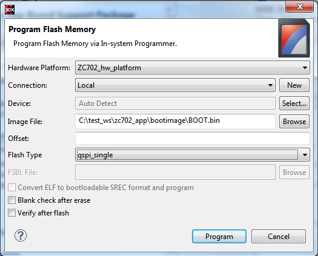

Program Flash is a SDK tool used to program the flash memories in the design. Various types of flash types are supported by SDK for programming.

The table below lists all the options available on the Program Flash Memory dialog box:
|
Option |
Description |
|---|---|
|
Hardware Platform |
Select the hardware platform you plan to use. |
|
Connection |
Select the connection to hardware server. |
|
Device |
Select a device. Auto Detect selects the first device on the chain, by default. |
| Image File |
Select the file to write to the flash memory.
|
| Offsest |
Specify the offset relative to the Flash Base Address, where the file should be programmed. Note: Offset is not required for MCS files.
|
| FSBL File | The FSBL .elf file is mandatory for
the NOR flash types in Zynq devices. Note: Not required for non-zynq
devices.
|
| Flash Type | Select a flash type.
Note: Appropriate part can be selected based on design. For Xilinx
boards the part name can found from the respective boards’ user
guide.
|
| Convert ELF to Bootable SREC format and program | The ELF file provided as the image file is converted into SREC format and programmed. This is a typical use case in non zynq devices. The SREC bootloader can be built and used to read the SREC converted ELF from flash, load it into RAM and boot. |
| Blank check after erase | The blank check is performed to verify if the erase operation was properly done. The contents are read back and check if the region erased is blank. |
| Verify after flash |
The verify operation is cross check the flash programming operation. The flash contents are read back and cross checked against the programmed data. |